Job guides
- Warrior
- Monk
- White Mage
- Black Mage
- Red Mage
- Thief
- Paladin
- Dark Knight
- Beastmaster
- Bard
- Ranger
- Samurai
- Ninja
- Dragoon
- Summoner
- Blue Mage
- Corsair
- Puppetmaster
- Dancer
- Scholar
Equipment and progression
Jobs
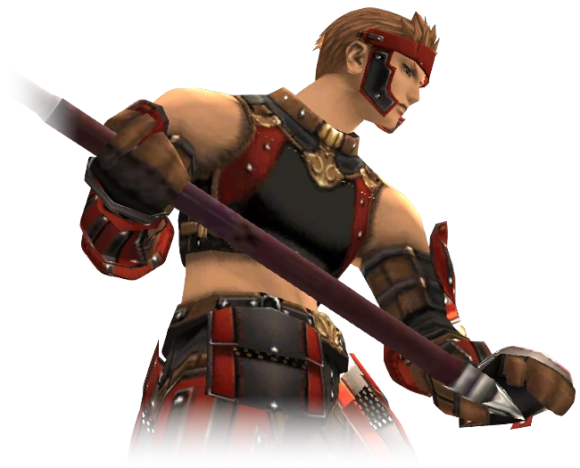
Warrior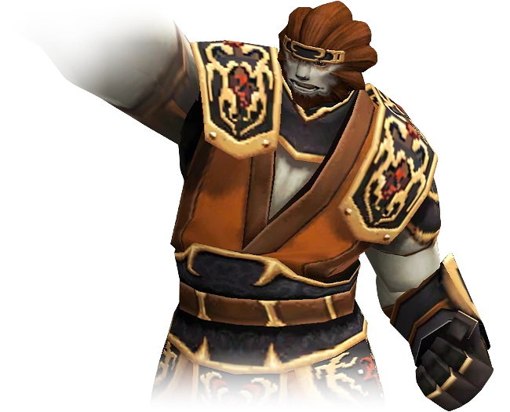
Monk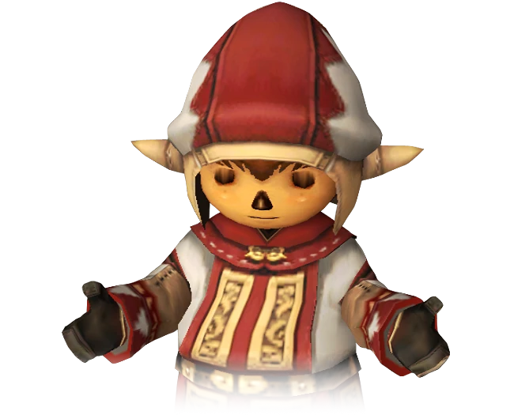
White Mage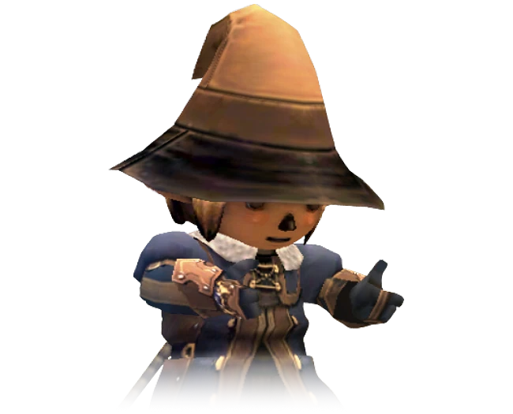
Black Mage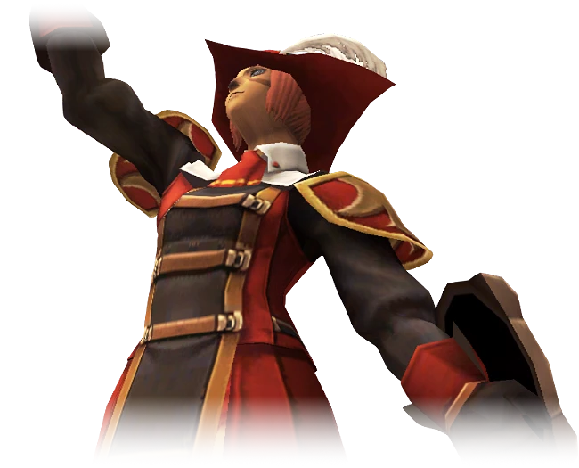
Red Mage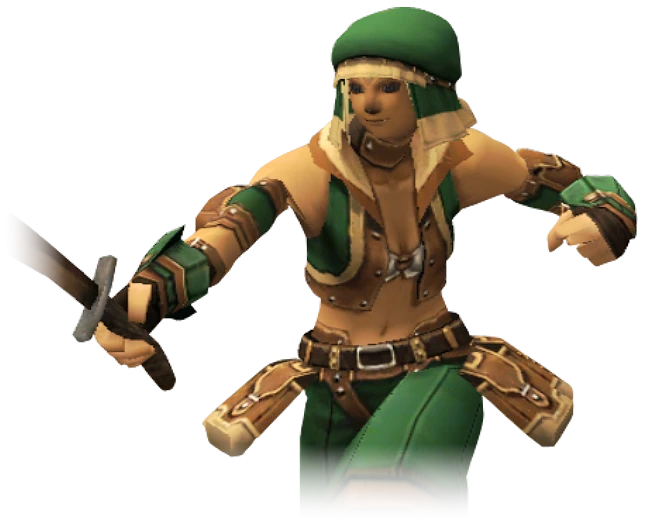
Thief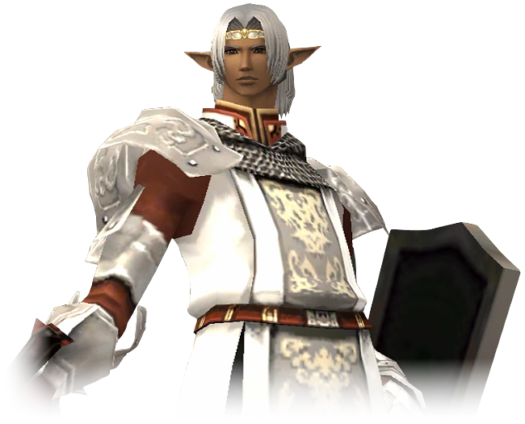
Paladin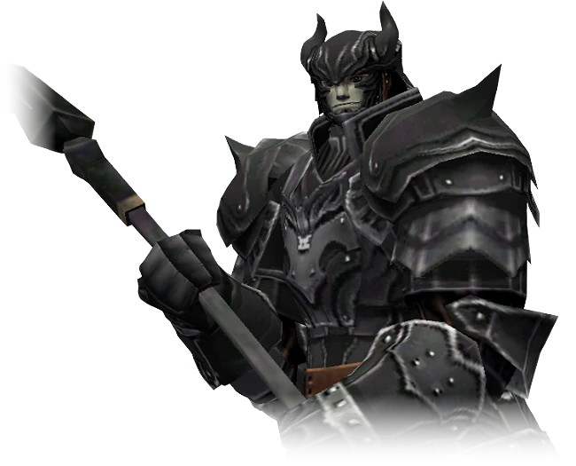
Dark Knight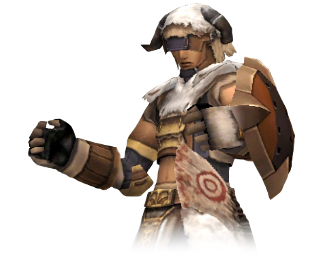
Beastmaster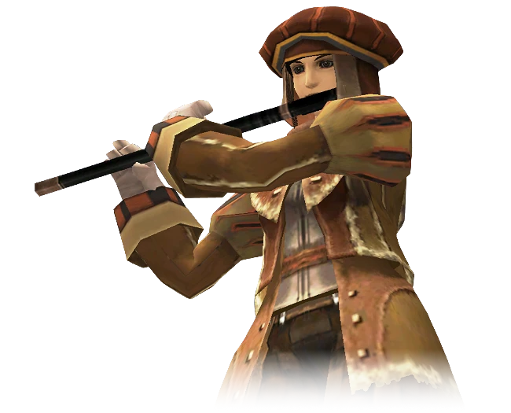
Bard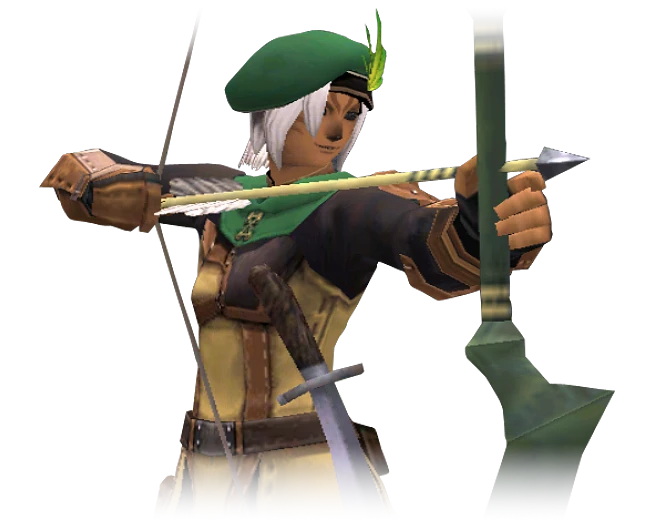
Ranger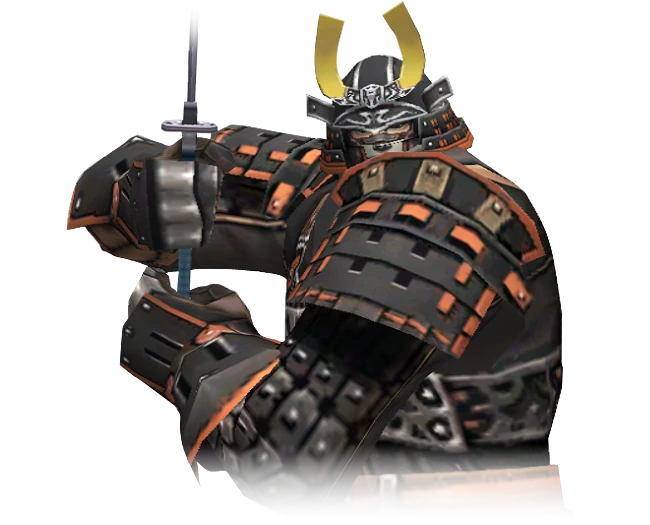
Samurai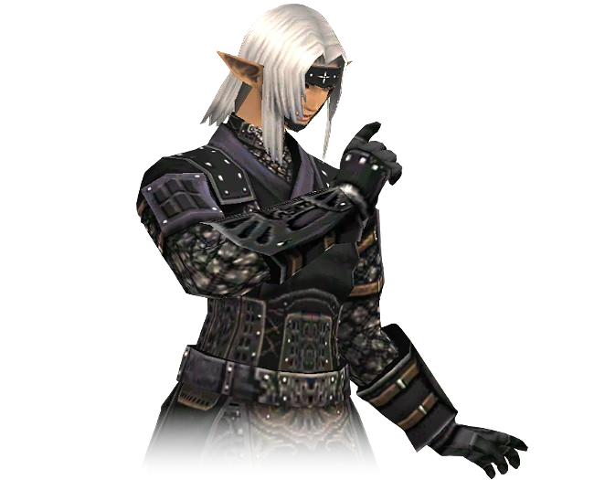
Ninja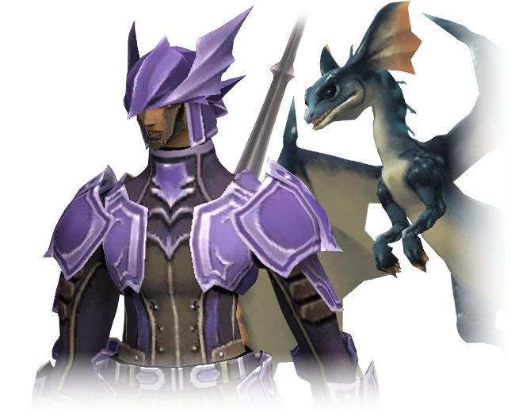
Dragoon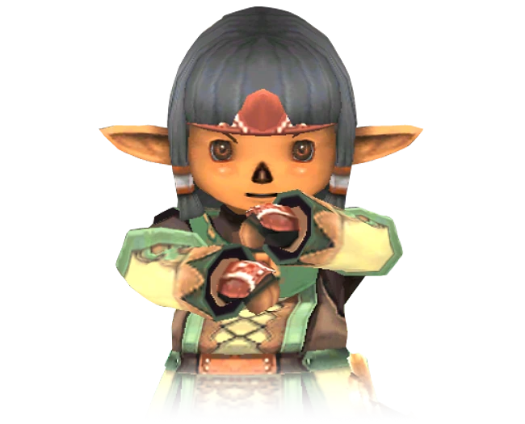
Summoner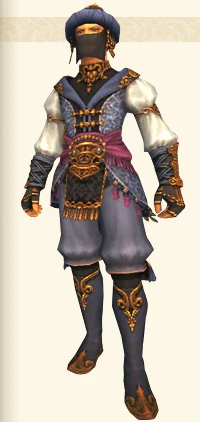
Blue Mage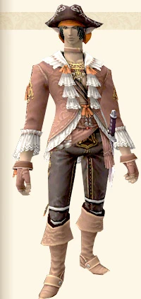
Corsair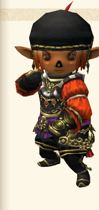
Puppetmaster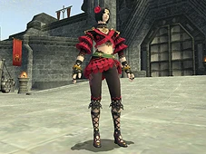
Dancer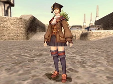
ScholarStarting equipment
| Job | Equipment |
|---|---|
| WAR | Trainee Axe with DMG +13 augment: total damage 14, delay 504. |
| MNK | Cesti and White Belt. |
| WHM | Onion Rod and Cure scroll. |
| BLM | Onion Staff and Stone scroll. |
| RDM | Onion Sword and Dia scroll. |
| THF | Onion Knife. |
The WAR axe was confirmed in play. Other starting loadouts are documented from the package. The axe keeps the name Trainee Axe; its extra damage appears under Augments.
Job guides
- Warrior — Double Attack, Warcry and equipment quests.
- Thief — Dual Wield from level 20.
- Thief equipment, levels 20–25
Advanced jobs retain their unlock requirements. Job Balance v1.0.1 is documented on the Warrior, Thief, Summoner, Dragoon and Paladin pages; installation is not yet confirmed.
Job Balance v1.0.1
Job Balance v1.0.1 is prepared and tested offline. Installation and in-game behavior are not yet confirmed.